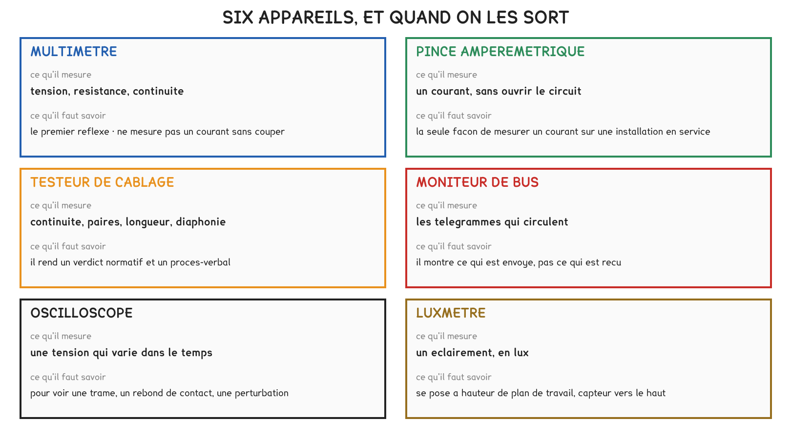
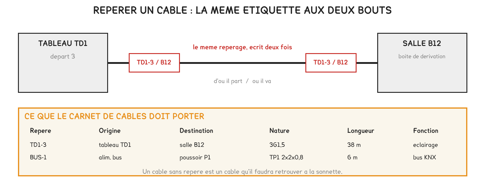
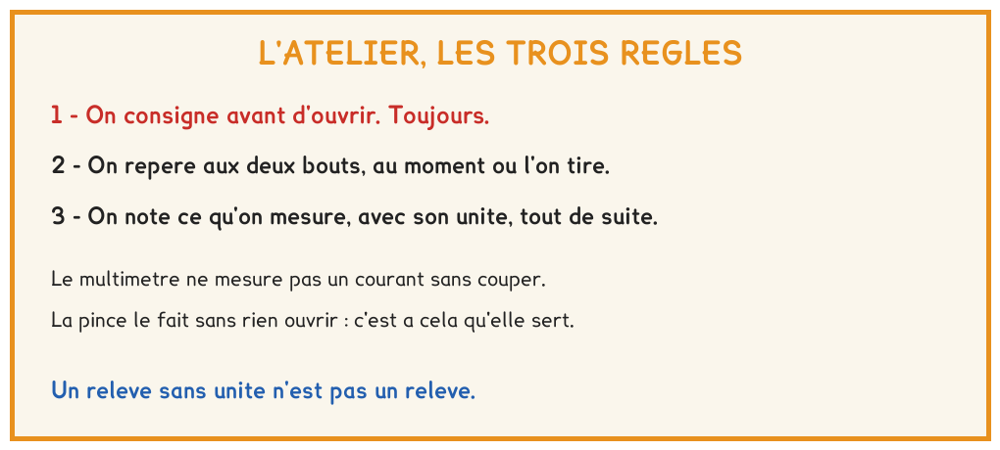

BTS FED option C · 1re année
Trois gestes installés en quatre heures, et qui serviront jusqu'au CCF : choisir l'appareil d'après la grandeur cherchée, repérer un câble au moment où on le tire, écrire un relevé qu'une autre personne peut exploiter.
6 questions · 4 exercices · 2 replis · 4 figures
Savoirs travaillés
Quatre heures en atelier, six appareils sur la table et un seul dans la main : le multimètre, avec sa notice. Vous avez relevé ses calibres et sa précision, puis encadré une lecture de 29,0 V. Vous avez ensuite étiqueté quatre câbles aux deux bouts, rempli le carnet, et mesuré l’alimentation du bus à vide puis en charge.
La dernière heure a été consacrée au positionnement É0. Il n’est pas noté, et il vous sera proposé à nouveau, à l’identique, en semaine 26 : un progrès mesuré vaut mieux qu’un discours sur le progrès.

| Ce que je cherche | Avec quoi | Ce qu’il faut noter |
|---|---|---|
| Une tension | multimètre | valeur, unité, calibre, précision |
| Un courant, circuit ouvert | multimètre en série | idem, plus la position du calibre |
| Un courant, sans rien ouvrir | pince ampèremétrique | idem, plus le sens si c’est du continu |
| Un lien réseau conforme | testeur de câblage | la classe visée et le verdict |
| Ce qui circule sur un bus | moniteur de bus | l’adresse et la valeur du télégramme |
| Un éclairement | luxmètre | la valeur, et la hauteur de mesure |
L’appareil se choisit d’après la grandeur cherchée, et non par habitude. Le multimètre ne mesure un courant qu’en ouvrant le circuit ; la pince le mesure sans rien ouvrir, et c’est souvent la seule mesure possible sur une installation en service.
Dans un énoncé, les mots « sans rien débrancher » excluent le multimètre. Beaucoup répondent pourtant « multimètre » par réflexe : c’est l’appareil de la grandeur, pas celui de l’habitude, qu’il faut sortir.
Aucune mesure ne se fait sur un circuit ouvert sans avoir vérifié l’absence de tension, avec un appareil dont on vient de contrôler le fonctionnement.
La troisième étape est celle qu’on saute quand on est pressé, et l’appareil de vérification se contrôle avant et après. Personne n’ouvrira un coffret sous tension cette année ; chacun saura dire dans quel ordre on procède, et pourquoi.

Le repère est identique aux deux extrémités, et il s’écrit au moment où le câble est tiré, jamais après. Le carnet désigne l’origine et la destination par leur nom de repérage, du type « TD1-3 → B12 », et non par une description.
| Repère | Origine | Destination | Nature | Longueur | Fonction |
|---|---|---|---|---|---|
« Du tableau au plafond » n’est pas une destination. Le carnet attend le nom de repérage de l’origine et celui de la destination, tels qu’ils sont écrits sur le tableau et sur la boîte, et la nature du câble telle qu’elle est inscrite sur sa gaine.
L’alimentation du bus est en service. Il s’agit de dire ce qu’elle délivre, à vide puis avec les participants raccordés, et d’écrire un relevé complet.
| À vide | En charge | |
|---|---|---|
| Valeur lue | ||
| Unité | ||
| Calibre utilisé | ||
| Encadrement, avec la précision de l’appareil |
Incertitude = x % × lecture + n digits
Deux encadrements qui se chevauchent ne permettent pas de conclure à un écart.
Un relevé porte une valeur, une unité, l’appareil et sa précision. Une valeur seule ne dit ni l’unité ni la confiance qu’on peut lui accorder, et ne permet à personne de reproduire ou de contester la mesure.
Conclure « la tension baisse » quand l’écart entre les deux lectures est plus petit que l’incertitude. C’est plausible physiquement, mais indémontrable avec cet appareil : la réponse juste est d’écrire qu’on ne peut pas conclure, et c’est un résultat.
Pour aller plus loin
Le digit est le dernier chiffre affiché. En calibre 60,00 V il vaut 0,01 V ; en calibre 600,0 V il vaut 0,1 V. Le même appareil, avec la même notice, est donc dix fois moins précis sur un calibre trop grand.
C’est la raison de choisir le plus petit calibre qui contient la valeur, et de noter ce calibre dans le relevé : sans lui, personne ne peut recalculer l’encadrement.
La situation 1 de l’épreuve E5, en semaine 18, évalue la compétence C7 : conduire des essais et des mesures. Trois de ses lignes sont déjà là : choisir et utiliser l’appareil (C7-5), le mettre en œuvre en sécurité (C7-4), et interpréter les résultats en appréciant leur précision (C7-6).
Le référentiel écrit, pour C7-6 : « leur précision est appréciée ». L’encadrement d’aujourd’hui est exactement cela.

Exercice · B8-1
La notice d’un multimètre annonce ± 0,8 % de la lecture, ± 2 digits. En calibre 60,00 V, il affiche 29,50 V.
Quelle est l’incertitude sur cette lecture, en volts ?
Exercice · B8-1
Un multimètre à ± 0,5 % de la lecture, ± 3 digits, en calibre 60,00 V, donne deux lectures voisines de 30 V, à vide puis en charge.
De combien, au moins, les deux lectures doivent-elles différer pour que leurs encadrements ne se chevauchent pas ?
Exercice · B8-1
Un client signale que l’éclairage d’un couloir clignote brièvement à chaque allumage. Vous soupçonnez le contact d’un relais, qui rebondirait à la fermeture pendant quelques millisecondes.
Quel appareil sortez-vous pour le voir ?
Exercice · C1-1
Un collègue propose de poser les étiquettes à la fin du chantier, quand tout sera tiré. Lui répondre en trois ou quatre lignes, avec deux raisons dont une qui n’est pas une question de temps.
La séance B2 câble la référence 230 V : un va-et-vient, puis un télérupteur et sa boucle de poussoirs. La procédure de consignation y sera redemandée sans le tableau sous les yeux, et le multimètre servira en continuité, hors tension, avant toute mise sous tension.
Cette page rappelle la séance. Elle ne remplace pas le polycopié et ne donne aucun corrigé. Tous les calculs se font dans votre navigateur ; rien n'est enregistré.